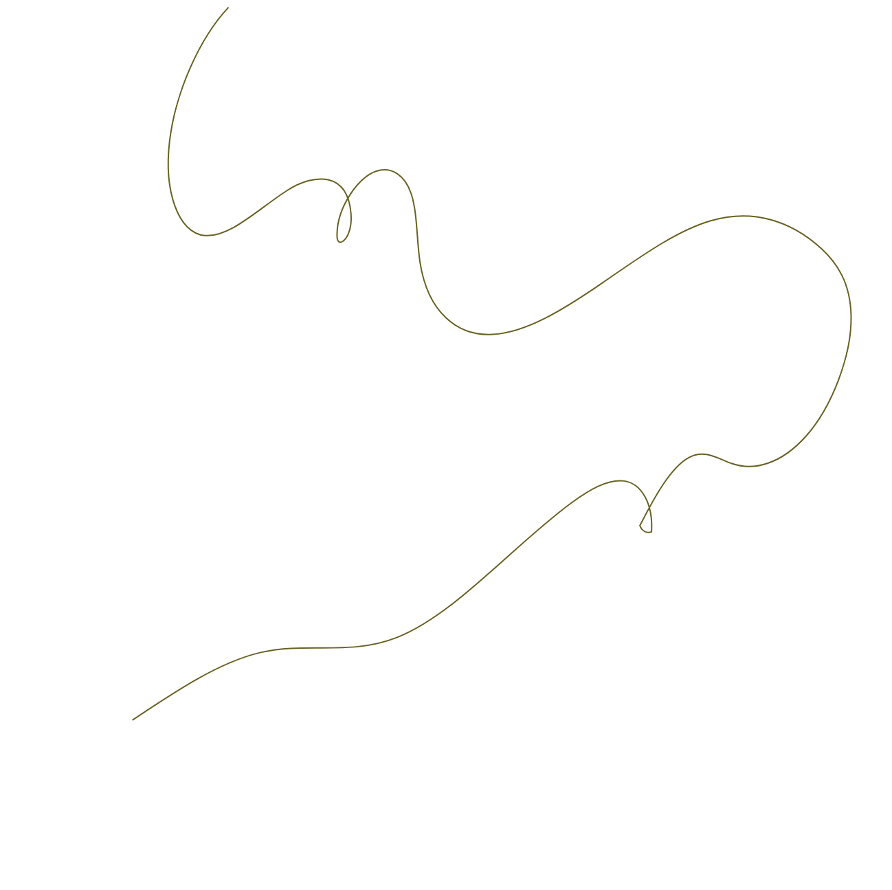

Historiek
1991
Onstaan
De VZW is opgericht als een kleinschalig onthaaltehuis voor mannen en vrouwen
1996
Begeleidingsaanbod
Vanaf 1996 bood de organisatie begeleiding aan.
1998
Uitbating werking Puerto
Samen met het CAW Brussel begon Huis van Vrede de werking Puerto uit te baten, die gericht was op begeleid wonen voor thuislozen
2006
Erkend centrum thuisbegeleiding
In januari 2006 kreeg de VZW de erkenning als centrum voor thuisbegeleiding met als doel het behoud van de woning.
2017
Samenwerking met Station Logement
In 2017 ging Huis van Vrede een samenwerking aan met Station Logement, specifiek gericht op Housing First, genaamd "Housing First Diogenes".
2023
Autonomie
Vanaf 2023 is de VZW Huis van Vrede volledig autonoom en voert zij haar opdrachten zelfstandig uit.